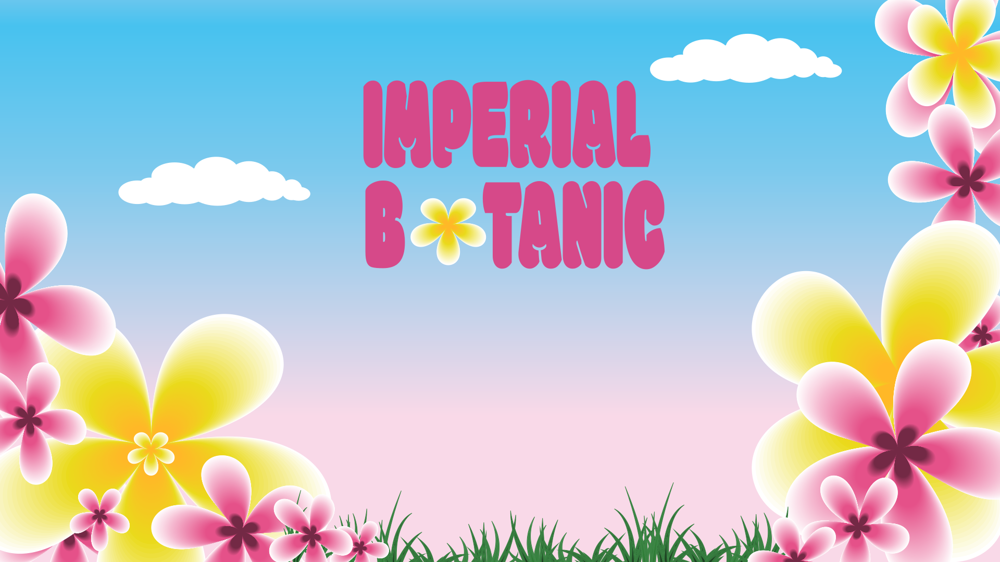
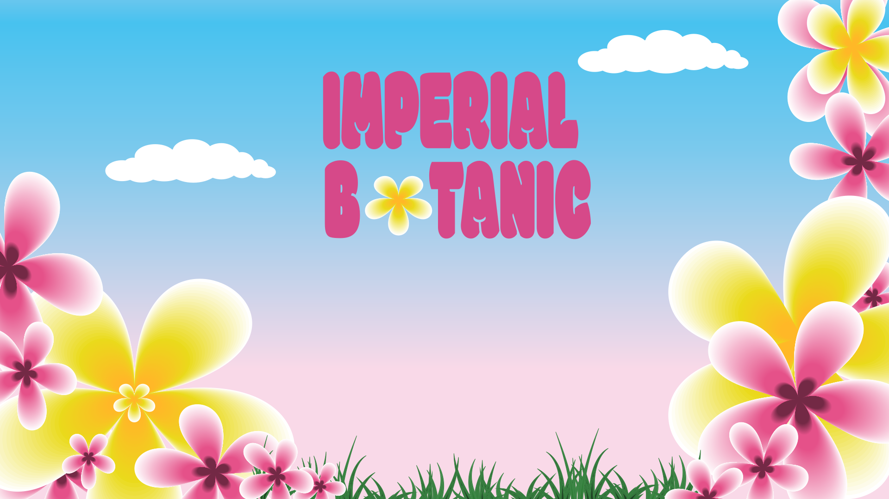

Tema 4 - ANIMATION
Primære fokus
I tema 4 har vi arbejdet med grundlæggende animation, med henblik på at designe og kode vores eget dynamiske website, gennem anvendelse af javascript og css animationer. Foruden at skulle skabe sin egen verden gennem formgivningen af grafiske elementer, så har en stor del af arbejdsprocessen været at opnå en dybere forståelse for samspillet mellem brugerengagement og teori om UI-elementer, figurelementer, baggrundsdesign og kompositionsteknikker.
Den kreative arbejdsproces
For at kunne skabe sin egen verden, der på den ene side virker tilstrækkelig legene og samtidig
har
et teoretisk og
konventionstungt fundament, valgte jeg først og fremmest at gå i kast med det stilmæssige
udtryk.
Med tanke på at jeg
gerne ville have mit spil til at henvende sig til den yngre målgruppe, har jeg ladet mig
inspirere
af bouba-stilen, da
det er med til at styrke det legene og bløde udtryk. Havde jeg derimod valgt et hårdere udtryk,
såsom en kiki inspireret
stil, så havde jeg bevæget mig længere væk fra min målgruppe, samtidig med at det havde givet et
mere skarpt og kantet
udtryk, som ikke understøtter det venlige udtryk, jeg gerne ville prøve at skabe.
Jeg har foruden bouba-stilen, ladet mig inspirere af ’Rule of thirds’, da jeg har forsøgt at
ladet
slottet i baggrunden
være det bærende element i mit baggrundsdesign. Dette skal dog tages med et gran salt, da jeg
samtidig ikke har ladet
begrænse af kompositionsopbygningen, da jeg samtidig gerne ville have mine karakterer i fokus.
Disney universet har været en nostalgisk inspirationskilde, hvilket jeg undervejs har kunne
trække
paralleller til i min
skitse- og karakterproces. Med øje for at give noget karakterdybde, valgte jeg derfor også at
skabe
en Avatar med to
udtryk, så jeg på den måde også får fremkaldt nogle følelser og konsekvenser ved at tabe
spillet.
Det mere komplicerede interaktive flow kommer til udtryk gennem mine UI-elementer. Da jeg gerne
ville bibeholde den
nostalgiske og bløde stil, prøvede jeg derfor også at afspejle mine UI-elementer. Jeg erfaret
dog
gennem mit arbejde med
mine spilelementer, at jeg distanceret mig lidt fra det egentlige tænkte udtryk med spillet, da
mine
blomster havde et
henholdsvis blødt og skarpt udtryk. Dette, sammen med en eventuel skyggelægning af min Avatar,
er
nævneværdige
optimeringspunker som jeg gerne ville arbejde mere med.

 



Det metodiske fokus
Gennem anvendelse af en kvantitativ spørgeskemaundersøgelse med fokus på spillets overordnede formål, blev jeg beriget med svar, der gjorde det tydeligt for mig at jeg skulle lægge mere vægt på at beskrive spillets format. Dette gav derfor anledning til at jeg ændrede i spilvejledningen og tydeliggjorde regler, mekanikker og mål. Havde jeg haft et mere kompliceret spil, havde det her været interessant at lege med eventuelle tutorial-niveauer. I det efterfølgende gruppearbejde med vores virksomhedssite anvendte vi igen et kvantitativt spørgeskemaformat, hvor jeg her kunne trække erfaringer fra tema 4.